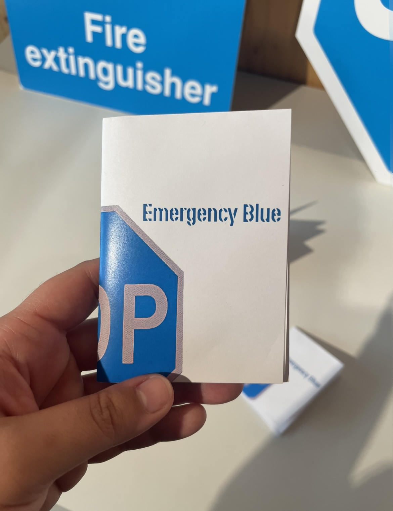
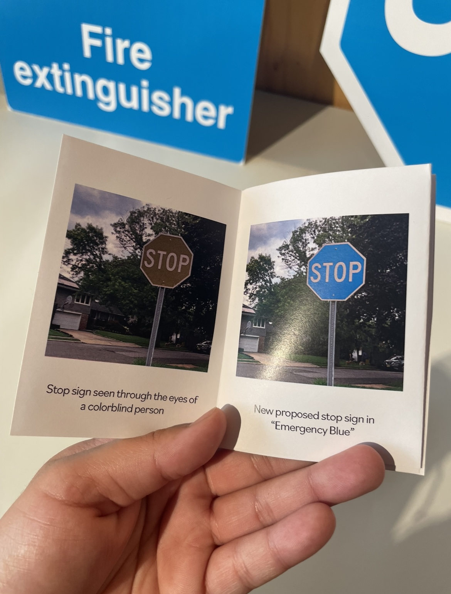

Emergency Blue
Red is an eye-catching color that stands out to us in street signs and maps. When we see the color red, we might associate it with words like “emergency”, “fire”, or “danger”. But what happens when someone isn’t able to see a color that stands out from the rest? I've created a psychogeographic map that navigates London through the lens of someone who was colorblind.



